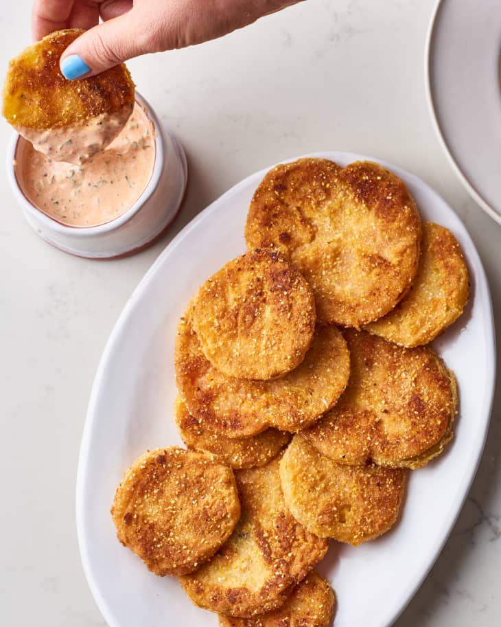

Fried Green Tomatoes Recipe

Southern Fried Green Tomatoes
Ripe red tomatoes sandwiched between slices of white bread is the quintessential taste of summer. But if you're
only eating ruby-hued tomatoes, look to the South to find summer's unsung hero. Stubbornly unripe green tomatoes
take a dip in tangy buttermilk, are breaded in cornmeal coating, and then fried until golden in a slick of hot
oil. It's time to try this easy Southern specialty at home.
Ingredients
- 2/3 cup instant flour divided
- 1 1/2 teaspoons kosher salt
- 3/4 teaspoon paprika
- 3/4 cup buttermilk
- 1 large egg white
- 1 1/2 teaspoons hot sauce, such as Louisiana or Tabasco
- 3/4 cup finely ground cornmeal
- 3 unripe green tomatoes (about 1 1/2 pounds total), cut into 1/4-inch thick slices
- 1/2 cup canola oil
Steps
-
Season the flour: Stir 1/3 cup of the flour, salt, and paprika together in a wide, shallow
bowl or pie plate.
-
Make the wet mixture: Whisk the buttermilk, egg white, and hot sauce together in second
wide, shallow bowl.
-
Prepare the cornmeal: Stir the cornmeal and remaining 1/3 cup flour together in a third
wide, shallow bowl.
-
Bread the tomato slices: Fit a wire rack inside a rimmed baking sheet. Dip each tomato
slice in the flour mixture, followed by the buttermilk mixture, and finally the cornmeal mixture.
-
Set the cornmeal coating: Place the breaded tomato slices on the rack in a single layer.
Let sit so the coating sets while the oil heats.
-
Heat the oil: Heat the oil in a large cast iron skillet over medium-high heat until
shimmering, about 5 minutes. The oil should sizzle immediately if you sprinkle flour into it.
-
Fry the tomatoes: Carefully add 4 to 5 tomato slices and fry until golden-brown, 3 to 5
minutes per side. Transer the fried tomatoes to a paper towel-lined plate. Fry the remaining tomato slices.